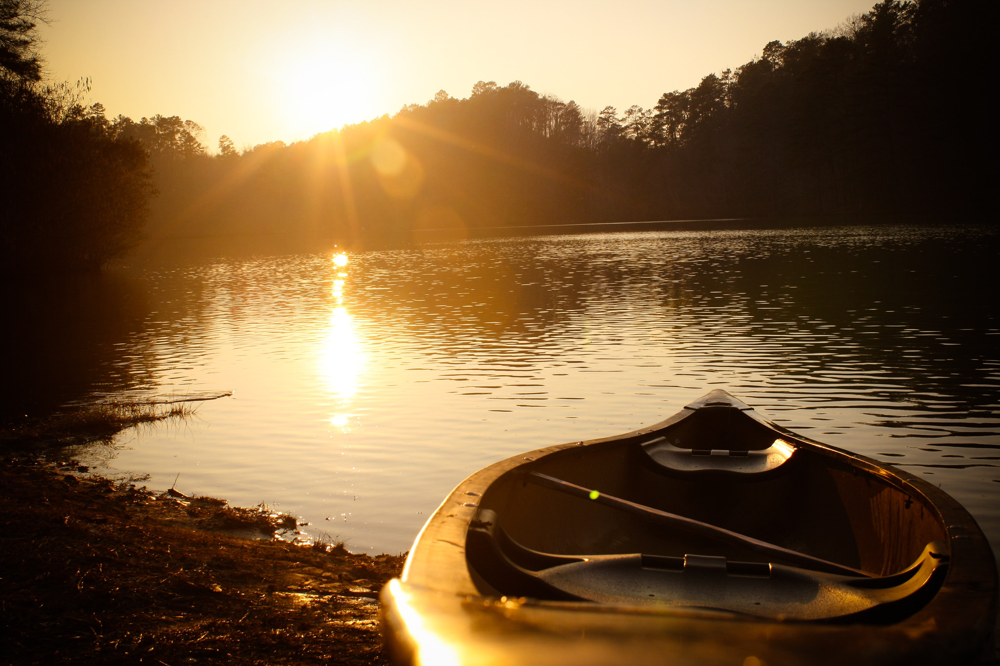

Design Challenge
The focus of the redesign
The website redesign aims to make the site more professional and effective to reach more of the local population and increase funding for the organization.
The focus of the redesign
The website redesign aims to make the site more professional and effective to reach more of the local population and increase funding for the organization.

Primary and Secondary Research
This page contains primary and secondary research about Canoeing for Kids. Primary research includes screenshots of their website and Facebook pages that contain their current branding and marketing materials. Secondary research contains current information in their field of work.
Main users of the site and why they visit it
This section evaluates all the audiences that will visit the website and considers the best ways to meet their needs.